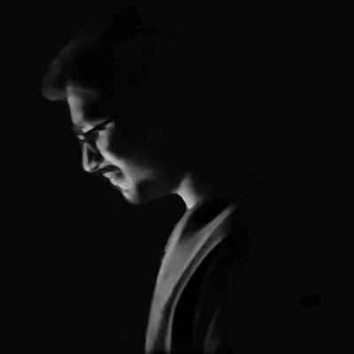

About Me
Welcome to my webpage! I am a PhD student in the Department of
Metallurgical and Materials Engineering at the Indian
Institute of Technology Madras, Chennai, India. I work with
Prof. Anand K. Kanjarla at the Laboratory for Mechanics of
Microstructures, IIT Madras. I like mathematics and
programming, which is why I enjoy working in the field of
computational mechanics. Currently, I am exploring phase-field
modelling of fracture in polycrystals and its implementation
using the scaled boundary finite element method.
Research Interests
- Scaled boundary finite element method
- Phase-field modelling of fracture
- Crystal plasticity
- Phase-field modelling of fracture
- Crystal plasticity
Publications
- Kumar, G.S ., Varma, T.V., Ghosh, A. et al. Effect of Crystal Orientation and Crystallographic Anisotropy on Shear Band Formation During Ductile Fracture in Fe Single Crystals. Metall Mater Trans A 55, 598–606 (2024). doi: 10.1007/s11661-023-07271-x
Education
Indian Institute of Technology Madras
, Tamilnadu, India. [Jul 2022 - Present]
Doctor of Philosophy – Metallurgical and Materials Engineering, CGPA – 9.25/10
Indian Institute of Technology Indore , Madhya Pradesh, India. [Aug 2020 - Jun 2022]
Master of Technology – Metallurgy Engineering, CGPA – 9.39/10
JNTUH College of Engineering Manthani , Telangana , India. [Oct 2012 - May 2016]
Bachelor of Technology – Mechanical Engineering, Percentage – 68.86
Doctor of Philosophy – Metallurgical and Materials Engineering, CGPA – 9.25/10
Indian Institute of Technology Indore , Madhya Pradesh, India. [Aug 2020 - Jun 2022]
Master of Technology – Metallurgy Engineering, CGPA – 9.39/10
JNTUH College of Engineering Manthani , Telangana , India. [Oct 2012 - May 2016]
Bachelor of Technology – Mechanical Engineering, Percentage – 68.86
Doctoral Research
Title
Supervisor
Duration Description
Supervisor
Duration Description
Computational study of initiation and propagation of
cracks in metallic materials
Prof. Anand Krishna Kanjarla
Laboratory for mechanics of microstructures,
Dept. of Metallurgical and Materials Engineering, IIT Madras.
Jul 2022 - Present
Laboratory for mechanics of microstructures,
Dept. of Metallurgical and Materials Engineering, IIT Madras.
Jul 2022 - Present
- The aim is to develop a numerical framework that combines phase-field modelling with crystal plasticity using the scaled boundary finite element method to simulate nucleation and propagation of cracks in metallic materials.
- The developed framework will be used to understand the effect of microstructural features on crack nucleation and propagation in metals.
Master's Research
Title
Supervisor
Co-Guide Duration Description
Supervisor
Co-Guide Duration Description
Continuum mechanics based modelling of material
deformation
Prof. Abhijit Ghosh
Microstructure and Texture Engineering Laboratory,
Dept. of Metallurgical Engineering and Materials Science, IIT Indore.
Prof. Saikat Sarkar, Dept. of Civil Engineering, IIT Delhi. Jun 2021 - Jun 2022
Microstructure and Texture Engineering Laboratory,
Dept. of Metallurgical Engineering and Materials Science, IIT Indore.
Prof. Saikat Sarkar, Dept. of Civil Engineering, IIT Delhi. Jun 2021 - Jun 2022
- Studied the effect of crystallographic anisotropy and crystal orientation on the formation of shear bands during ductile fracture in Fe single crystals.
- Explored the modelling of shear band formation through crystal plasticity simulations using DAMASK.
Bachelor's Projects
Title
Supervisor
Duration Description
Supervisor
Duration Description
Design and development of an ornithopter using Autodesk
Inventor
Prof. K. Prasanna Lakshmi
Dept. of Mechanical Engineering, JNTUHCEM.
Jan 2016 - May 2016
Dept. of Mechanical Engineering, JNTUHCEM.
Jan 2016 - May 2016
- Studied the flight theory and techniques of different kinds of birds to understand their superior aerodynamic efficiency.
- Designed and developed a 3D CAD model of a remote-controlled ornithopter using Autodesk Inventor to achieve an aerodynamic efficiency close to that of a bird.
Title
Supervisor
Duration Description
Supervisor
Duration Description
Design and fabrication of pedal powered multiple machining
machine
Prof. K. Prasanna Lakshmi
Dept. of Mechanical Engineering, JNTUHCEM .
Jul 2015 - Dec 2015
Dept. of Mechanical Engineering, JNTUHCEM .
Jul 2015 - Dec 2015
- Designed and fabricated a pedal-powered machine that performs basic machining operations such as drilling, cutting and grinding simultaneously.
Experience
GIS Engineer
,
RMSI Pvt. Ltd
., Hyderabad, India.
[Jan 2017 - Dec 2017]
- developed digital maps for mobile and web applications.
- worked as a quality controller to ensure the quality of the maps.
Manufacturing Intern , Bharat Heavy Electricals Limited, Hyderabad , India. [May 2015 - Jun 2015]
- Completed industrial training in turbines and compressors - production department.
- Studied the manufacturing methods of steam turbine blades.
- developed digital maps for mobile and web applications.
- worked as a quality controller to ensure the quality of the maps.
Manufacturing Intern , Bharat Heavy Electricals Limited, Hyderabad , India. [May 2015 - Jun 2015]
- Completed industrial training in turbines and compressors - production department.
- Studied the manufacturing methods of steam turbine blades.
Technical Skills
Programming
CAD
CAE Others
CAD
CAE Others
MATLAB, Fortran, Python, Git, OpenMP, MPI, OpenACC
AutoCAD, Autodesk Inventor Pro, Fusion 360, Catia
Ansys, Abaqus, DAMASK, Gmsh MS-Excel (Office), LATEX, ParaView
Ansys, Abaqus, DAMASK, Gmsh MS-Excel (Office), LATEX, ParaView